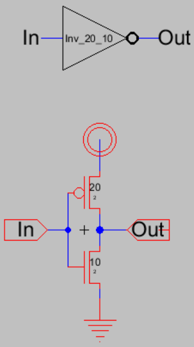
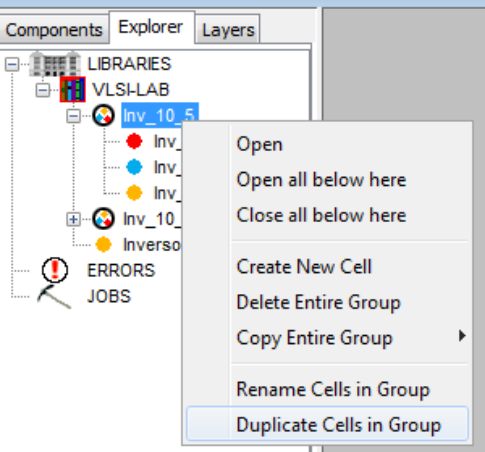
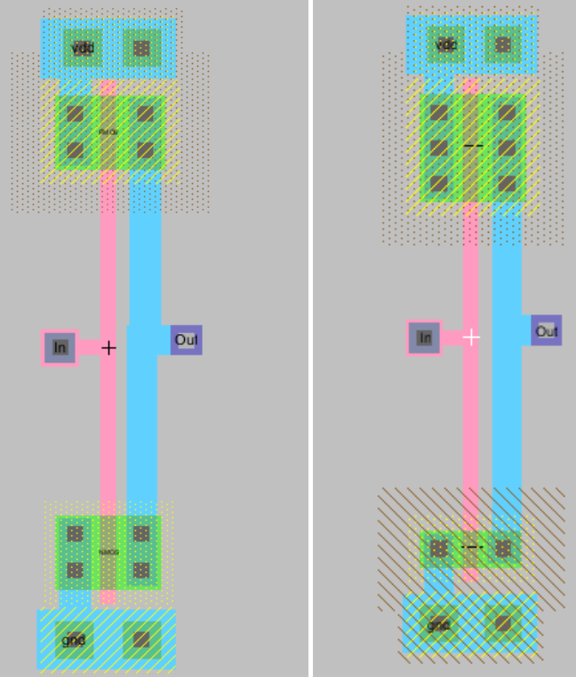
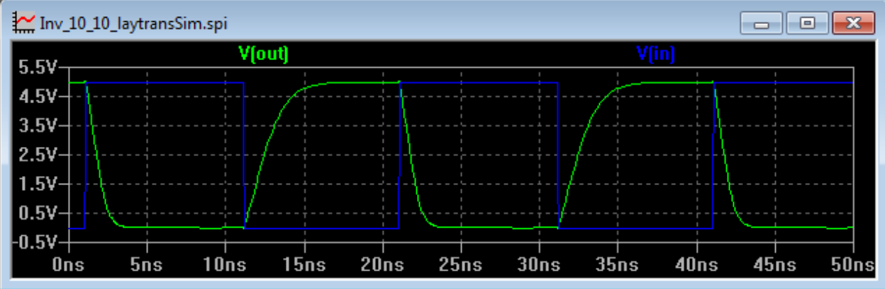
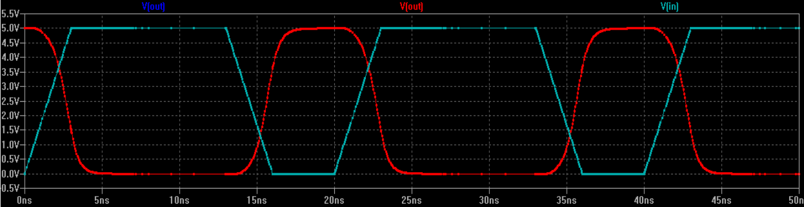

Laboratorio 1: Crear y simular un inversor¶
En este laboratorio se crearán inversores de distintos tamaños y se realizaran simulaciones para comparar su comportamiento
Contenidos del laboratorio
Objetivos¶
- Analizar la curva de \(V_{in}\) vs \(V_{out}\) de un inversor para distintas proporciones \({ùõΩ_p}/{ùõΩ_n}\)
- Simular el tiempo de ascenso y caída del inversor
- Analizar el consumo de potencia de un inversor
Procedimiento¶
Layout y esquemático de los inversores¶
Cree el esquemático y el √≠cono para un inversor con las siguientes dimensiones \(W_p = 20ùúÜ\) y \(W_n = 10ùúÜ\). Asegúrese de exportar las entradas y salidas. En TutorialVLSILab se explica con detalle los pasos a seguir para crear una celda refi√©rase a este para la creaci√≥n del primer inversor, un nombre representativo para este inversor puede ser Inv_20_10.
Figura 44 Esquemático del inversor
Dibuje el layout para esta celda. Para este laboratorio \(V_{cc}\) y \(V_{ss}\) deberán correr de forma horizontal en la parte superior e inferior de la celda en metal 1, el espacio entre \(V_{cc}\) y \(V_{ss}\) será de 80 λ de centro a centro. Los transistores nmos ocuparan la parte inferior de la celda y los pmos la parte superior; las entradas y salidas se conectaran por medio de contactos de metal 2, aparte de esto las ningún metal2 o 3 deberá ser utilizado dentro de las celdas. Asegúrese de establecer el modelo de Spice para los transistores.
Use la herramienta DRC para verificar que el layout cumple con las reglas de diseño
Verifique que el layout y el esquemático sean equivalentes por medio de NCC. Puede ver la celda en 3D para tener un mejor entendimiento de la interacción entre las distintas capas:

Figura 46 Vista en 3D del inversor
Ahora cree otros dos inversores (las tres vistas) para dos grupos de dimensiones: \(W_p = 10ùúÜ\), \(W_n = 10ùúÜ\) y \(W_p = 15ùúÜ\), \(W_n = 5ùúÜ\). El tama√±o de la celda se debe mantener. Para hacer esto más rápido de click derecho sobre la celda Inv_20_10 seleccione ‚ÄúDuplicate cells in group‚Äù cambie el nombre para el grupo y modifique esta nueva celda.
Figura 47 Menu de duplicación de celdas
Figura 48 Layout para las distintas versiones del inversor
Use las herramientas DRC y NCC para las dos nuevas celdas que creó
El largo de la celda es l√≠mitado, debe ser de 80 Œª desde el centro de gnd al de vdd, pero la celda puede crecer en ancho tanto como se quiera. Teniendo esto en cuenta cree un inversor de tama√±o \(W_p = 40ùúÜ\) y \(W_n = 20ùúÜ\)
{kind=link}
{kind=link}
{kind=link}
{kind=link}
Simulación 1: curva de transición del inversor¶
Haga una copia de los layout para realizar una simulación
Prepare la simulación, puede apoyarse en el tutorial
Realice un análisis DC donde se determine el valor de Vout para un valor dado de Vin, realice un grafico de \(V_{out}\) vs \(V_{in}\) para cada uno de los transistores

Figura 49 VTC del inversor
Determine los márgenes de ruido para cada uno de estos inversores
Identifique las regiones de operación. Los voltajes de umbral los puede encontrar en el archivo Spice.txt
Recuerde que el punto medio de voltaje \(V_m\) está definido como el punto donde la curva característica del inversor interseca la línea de ganancia unitaria es decir \(V_m\) es el punto donde \(V_{out}\) es igual a \(V_{in}\). Un valor de \(V_{in} = V_m\) no representa una cantidad booleana, pero, para \(V_{in}\) menor a \(V_m\) indica que salida es más cercana a un cero lógico.
Un inversor simétrico es aquel que tiene un rango de voltajes de entrada, que permite que la tensión de salida tenga un rango 0 y 1 de igual tamaño. Esto se logra cuando:
\[V_m = 12 V_{dd}\]Encuentre \(V_m\) para los distintos transistores, compare el valor obtenido con el valor teórico, deber encontrar una expresión para \(V_m\) en términos de los voltajes de umbral de los transistores y de β
Analice como afecta el dimensionamiento de los transistores la curva caracter√≠stica del inversor encuentre la relaci√≥n para \({ùõΩ_p}/{ùõΩ_n}\) los transistores que simul√≥
Simulación 2: potencia¶
- Para los siguientes cálculos considere el inversor sim√©trico de dimensiones \(W_p = 20ùúÜ\) y \(W_n = 10ùúÜ\)
- De la simulación anterior, visualice la corriente del inversor durante la transición, observe que la corriente alcanza un pico en \(V_m\), que implicaciones tiene esto en consumo de potencia?
- La potencia dinámica \(P_{dyn}\) deriva del hecho de que cuando hay una transición de se crea un camino de Vdd y Gnd que carga o descarga \(C_{out}\). Considere que la señal de entrada es una onda cuadrada con un periodo de 10ns, y que la carga para el inversor de de 4FO. Con estos datos calcule \(P_{dyn}\).
Simulación 3: tiempo de ascenso y caída¶
Las compuertas lógicas introducen un tiempo de retardo cuanto sus entradas cambian, la señal de entrada reacciona a la salida, pero el voltaje de salida no puede cambiar de forma instantánea. La transición de la salida de 1 a 0 es el retardo de caída y de 0 a 1 el de ascenso. Estos tiempos se pueden calcular analizando las transiciones de los circuitos
Realice una simulación con una carga de 4FO, en el los archivos de Spice puede ver cuánto es la capacitancia de entrada para cada uno para cada uno de los inversores que dibujó. El tiempo de ascenso y de caída se definirán como el tiempo de la compuerta de pasar del 10% al 90% de su valor final
Figura 50 Tiempos de ascenso y caída
Compare los tiempos ascenso y caída para los distintos inversores que dibujó
Ahora manteniendo la misma carga, varíe la forma de la señal de entrada, cambiando el slope, algo similar a lo que se muestra a continuación, escoja 5 valores para este slope y simule para cada inversor, compare. Como afecta esta variación en la salida la velocidad de respuesta del inversor
Figura 51 Slope de entrada
{kind=link}
{kind=link}
Simulación 4: ruido¶
Para analizar la inmunidad al ruido del inversor genere señales a la entrada que le permitan determinar como se ve afectado el valor de la salida por el ruido. Determine qué valor de voltaje en la entrada logra distorsionar la salida. Itere cuantas veces sea necesario
¿Cómo se ven afectados estos valores por el dimensionamiento del transistor? Qué nivel lógico se está beneficiado, en términos de inmunidad al ruido, con el dimensionamiento de los transistores.Figura 6.13. Laboratorio 1: Simulación de Ruido

Figura 52 Simulación de ruido